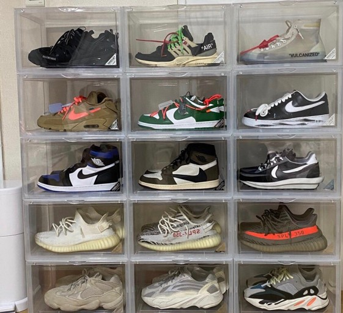

에어 조던(영어: Air Jordan)은 스포츠 용품업체 나이키에서 발매하는 농구 운동화 브랜드이다. 에어는 에어 쿠션 기술을 이용한 운동화 시리즈임을 의미하고, 조던은 NBA 선수 마이클 조던과의 협업임을 의미하고 있다. 원래 농구 운동화로 발매된 것이지만, NBA 및 농구 자체의 스포츠로서의 인기와 마이클 조던 본인의 인기, 거리 농구과 스트리트 패션이 유행함에 따라 농구 선수와는 관계없이 히트 상품이 되었다. 에어 조던(Air Jordan)은 마이클 조던을 위한 그리고 마이클 조던이 보증하는 신발 및 의류 브랜드이다. 과거에는 나이키의 브랜드였으나, 현재는 조던 브랜드가 나이키 산하의 독립 브랜드로 분화되면서 조던 브랜드를 통해 발매되고 있다. 나이키 에어 조던 시리즈는 1985년에 처음 발매 되었다. 
매년 새로운 디자인을 통해 발매 되고 있으며, 조던이 NBA에서 은퇴한 후에도 계속해서 발매 되고 있다. 또한 조던 브랜드는 팀 조던으로 운동 선수들을 후원하고 있으며, 선수들의 시그니처 상품들도 발매하고 있다. 에어 조던 넘버링 시리즈와 팀 조던 시그니쳐 모델 뿐 아니라 다양한 신발(농구화를 필두로, 야구화나 트레이닝화, 런닝화 등)과 의류, 용품들도 출시되고 있다. 이들 제품들은 기존 조던 넘버링 모델에서 일부 요소나 컨셉을 따오는 경우가 많다.